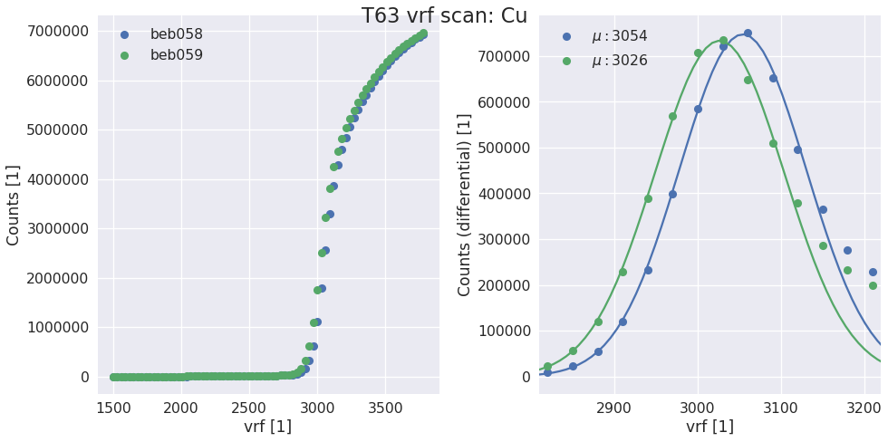
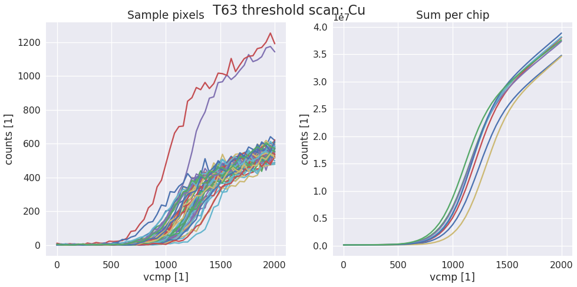

EIGER Calibration¶
This document describes the calibration procedure for an EIGER detector. Functions are documented in the order they are normally run.
Calibration in the big X-ray box¶
A working calibration script is found in: scripts/eiger_calibration.py but the procedure is also outlined here. Calibrating in the X-ray box at PSI we can use automated control of targets and shutter.
We start with a general setup of the calibration. Specifying which detector we have and the type of calibration. Both cfg.nmod and cfg.geometry are explicitly mentioned. This helps with compatibility if the functions are used to analyze data without the detector connected.
#General
cfg.verbose = True
cfg.nmod = 2
cfg.geometry = '500k'
cfg.calibration.type = 'XRF'
#Configuration for the calibration script
cfg.det_id = 'T63'
cfg.calibration.gain = 'gain5'
cfg.calibration.target = 'Cu'
cfg.path.data = os.path.join( '/mnt/disk1/calibration/',
cfg.det_id, cfg.calibration.gain)
#Record the measurement in a log file
logger = logging.getLogger()
cfg.path.log = cfg.path.data
cfg.set_log('default_file.log', stream = False, level = logging.INFO)
Take control of the X-ray box and make sure that the high voltage is switched on. Then perform the basic setup of the detector before starting calibration. This includes setting dynamic range, vthreshold etc. All settings are located in config.py
box = XrayBox()
box.unlock()
box.HV = True
d = Detector()
calibration.setup_detector(d)
Vrf scan¶
The first step of the calibration is a scan of Vrf to find the correct gain for the energy used. The aim in this step is to have the inflection point at vthreshold=1200 (can be changed in config). The exposure time required to have 1000 counts at the inflection point is also calculated. While there has been no systematic study this seems to be a good trade off between speed and accuracy.
vrf, t = calibration.do_vrf_scan(d, box)
d.dacs.vrf = vrf
cfg.calibration.exptime = t
Scurve and fiting¶
Next the trimming is performed by first taking an scurve then fitting each pixel to find the inflection point. The vcmp of each chip is set to the mean of the inflection point.
calibration.do_scurve(d, box)
calibration.do_scurve_fit()
calibration.find_mean_and_set_vcmp(d, fit_result)
Trimbit scan¶
Next the trimbits are scanned to check with trimbit gives the same counts as the inflection point. Finally trimbits are written to disk.
calibration.do_trimbit_scan(d, box)
calibration.find_and_write_trimbits(d, tau = 200)
Verification scan¶
After timming we verify with another scurve. Again fitting each pixel.
calibration.load_trim(d)
cfg.calibration.run_id = 1
calibration.do_scurve(d, box)
calibration.do_scurve_fit()
(optional) Vcmp calibration¶
The setting of the energy threshold for a module will be done by inerpolating between different trim points, but optionally, to quantify the threshold dispersion at the trim point and to provide a way to make small adjustments the vcmp can also be calibrated taking one additional point.
calibration.take_global_calibration_data(d, box)
calibration.per_chip_global_calibration()
cfg.top = d.hostname[0]
cfg.bottom = d.hostname[1]
calibration.generate_calibration_report()
Functions used for calibrating¶
-
sls_detector_tools.calibration.do_vrf_scan(detector, xraybox, pixelmask=None, start=1500, stop=3800, step=30)[source]¶ Does a vrf scan and fits the differential of the scurve for each halfmodule in the detector system.
Todo
Check the multi module system support
Parameters: - detector (SlsDetector) – The detector that should be scanned
- xraybox (XrayBox or DummyBox) – Used for selecting the right target and controlling the shutter
- pixelmask (np_array(bool), optional) – Numpy array of bools of the same size and one frame or None to disable
- start (int, optional) – start value of the scan
- stop (int, optional) – end value of the scan
- step (int, optional) – stepsize
Returns: - vrf (list) – list of vrf values for each half module
- t (float) – Suggested exposure time for the scurve
Examples
vrf, t = calibration.do_vrf_scan(d, box)
-
sls_detector_tools.calibration.do_scurve(detector, xraybox, start=0, stop=2001, step=40)[source]¶ Take scurve data for calibration. When not using the Xray box pass a dummy xray box to the function and make sure that shutter is open and target is correct!
Examples
data, x = calibration.do_scurve(d, box)
-
sls_detector_tools.calibration.do_scurve_fit(mask=None, fname=None, thrange=(0, 2000))[source]¶ Per pixel scurve fit from saved data and save the result in an npz file
Todo
Move to scaled fits?
Examples
fit_result = calibration.do_scurve_fit()

-
sls_detector_tools.calibration.do_trimbit_scan(detector, xraybox, step=2, data_mask=None)[source]¶ Setup the detector and then scan trough the trimbits. Normally with step of 2 performa a trimbit scan
Examples
fit_result = calibration.do_trimbit_scan(detector, xraybox)
-
sls_detector_tools.calibration.find_and_write_trimbits(detector, tau=None)[source]¶ Examples
fit_result = calibration.find_and_write_trimbits(decector)
-
sls_detector_tools.calibration.load_trimbits(detector)[source]¶ Load trimbits for the current calibration settings. Defined in config.py
Examples
calibration.load_trimbits(d) >> Settings file loaded: /mnt/disk1/calibration/T63/gain5/T63_CuXRF_gain5.sn058 >> Settings file loaded: /mnt/disk1/calibration/T63/gain5/T63_CuXRF_gain5.sn059